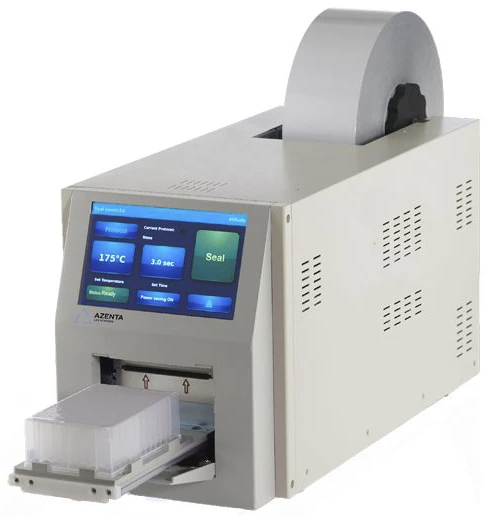

Azenta a4S#
Summary |
Photo |
|---|---|
- OEM Link |
 |
Setup Instructions (Programmatic)#
%load_ext autoreload
%autoreload 2
Identify your control PC’s port to your a4S sealer and instantiate the Sealer frontend called a4s:
from pylabrobot.sealing import a4s
s = a4s(port="/dev/tty.usbserial-0001") # This is a predifned Sealer object with the A4SBackend
# You can also use the Sealer class directly, e.g.:
# from pylabrobot.sealing.sealer import Sealer
# from pylabrobot.sealing.a4s_backend import A4SBackend
# s = Sealer(backend=A4SBackend(port="/dev/tty.usbserial-0001"))
type(s)
await s.setup()
Note
When the a4S is first powered on, it will open its loading tray - this means the machine default state is open!
If this is the first time you are using the a4S, follow the OEM’s instructions to load a foil/film roll using the required metal film loading tool.
Usage#
Sealing#
The a4S firmware enables sealing with just one simple command:
await s.seal(
temperature=180, # degrees Celsius
duration=5, # sec
)
This command will…
set the
temperaturewait until temperature is reached (!)
move the plate into the machine / close the loading tray
cut the film off its roll (!!)
perform sealing of film onto the plate for the specified
durationmove the plate out of the machine / open the loading tray
Pre-set Temperature#
To accelerate the sealing step you can pre-set the temperature of the sealer by using the set_temperature method.
The temperature is set in degrees Celsius.
await s.set_temperature(170)
await s.get_temperature()
Close and Open of the Loading Tray#
The a4S does empower standalone closing and opening of the loading tray. However, there is no conceivable reason to do so when one considers the issues this creates:
The default position of the machine’s loading tray is open. If one executes…
await s.close()
…this not only closes the loading tray but also cuts the film/foil that is currently loaded - without performing a sealing action!
Warning
This means a single leaf of film will fall onto the loading tray (or on the top of a plate located on the loading tray).
(This is a mechanical constraint of the a4S’ design:
Without active motors turning the film roll into the opposite direction during an await s.close() command the film inside the machine would be pushed inwards and buckle.
This could lead to multiple problems, including potential sticking of the film to hot internals.
As a result, the cutting of the film during close is an inbuilt, mechanical safety feature [to our knowledge])
When executing…
await s.open()
…the single leaf of film will then require manual removal.
(Except if you are using some advanced soft-robotics arm that can handle films/foils 🐙👀)
Note
It is possible that this cutting of film during a closing procedure disconnects the film roll with the internals. If this happens you have to manually re-spool the film roll before you can continue.
Querying Machine Status#
The a4S has advanced features that are available by calling the frontend’s (Sealer/a4s) backend (A4SBackend) directly.
status = await s.backend.get_status()
print("current_temperature: ", status.current_temperature)
print("system_status: ", status.system_status)
print("heater_block_status: ", status.heater_block_status)
print("error_code: ", status.error_code)
print("warning_code: ", status.warning_code)
print("sensor_status: ")
print(" shuttle_middle_sensor: ", status.sensor_status.shuttle_middle_sensor)
print(" shuttle_open_sensor: ", status.sensor_status.shuttle_open_sensor)
print(" shuttle_close_sensor: ", status.sensor_status.shuttle_close_sensor)
print(" clean_door_sensor: ", status.sensor_status.clean_door_sensor)
print(" seal_roll_sensor: ", status.sensor_status.seal_roll_sensor)
print(" heater_motor_up_sensor: ", status.sensor_status.heater_motor_up_sensor)
print(" heater_motor_down_sensor: ", status.sensor_status.heater_motor_down_sensor)
print("remaining_time: ", status.remaining_time)